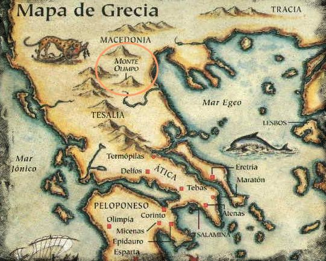
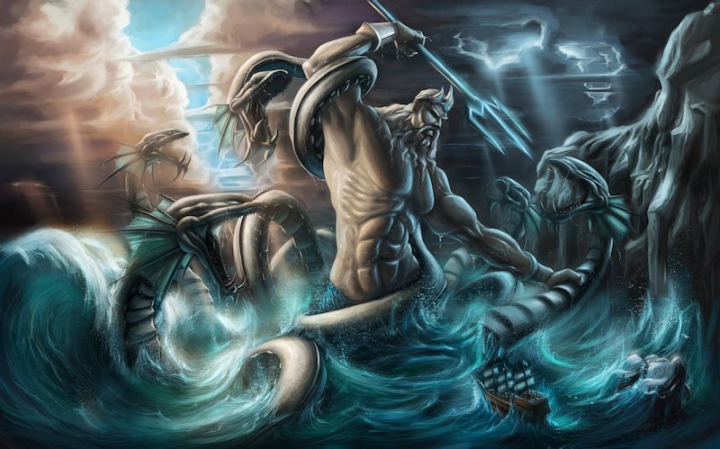
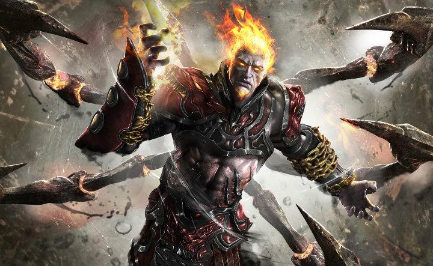
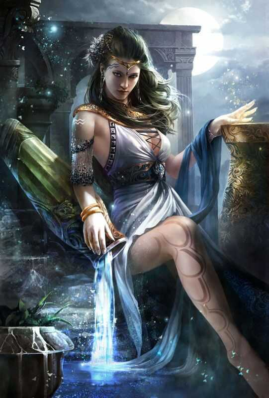
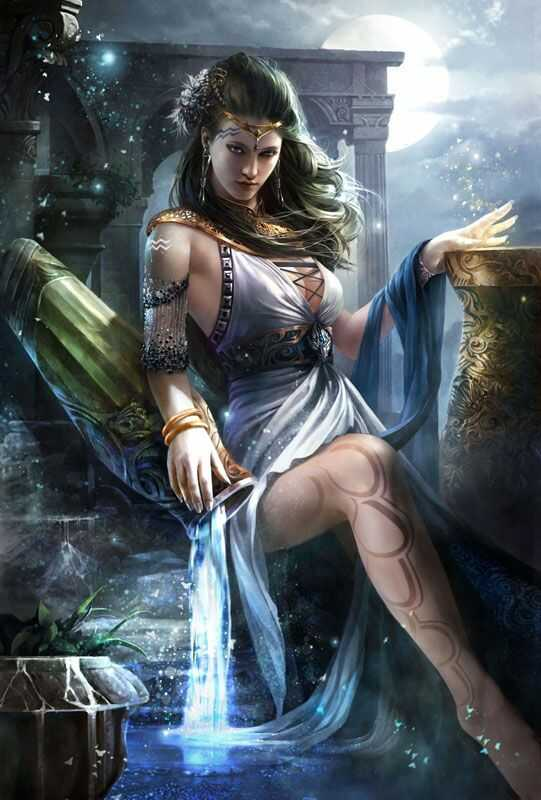

Historia
- Algo extraño sucede…los dioses antiguos han perdido su cordura…una energía oscura los controla y hace que hayan perdido el juicio. Para devolverlos a su ser original deberemos derrotarlos en una aventura épica en la que recorreremos distintas mitologías y escenarios históricos para devolver el orden al mundo
- Nuestros héroes se encuentran antes un gran desafío, enfrentarse a distintas mitologías en una línea temporal totalmente distorsionada para salvar al mundo del caos. Para ello nuestros héroes deberán desplazarse por el enorme mundo de Azeroth mediante el uso de portales que les adentrarán en tierras inhóspitas e inexploradas donde les esperarán un sinfín de enemigos.
- Para desplazarnos por las distintas líneas, nuestros héroes usarán portales, los cuales funcionan mediante poder de ánima. Cada uso de portal consume nuestra energía de ánima y deberemos derrotar a todos nuestros enemigos para poder avanzar a la siguiente zona.
- Grecia, nuestra aventura transcurre en la Antigua Grecia. Deberemos restaurar el orden en esta línea temporal. Para ello viajaremos hasta el monte Olimpo donde deberemos derrotar a los principales dioses para restaurar su cordura y equilibrar así esta línea temporal.
- Nuestra aventura empieza enfrentándonos al todopoderoso Poseidón, dios de los mares, el cual nos podrá difícil nuestro desembarco en el monte Olimpo a través del mar Egeo. Una vez derrotado, deberemos adentrarnos en el monte Olimpo hasta llegar a su cima y derrotar a Zeus, pero será un largo camino ya que para llegar hasta él nos espera un largo camino.
- Deberemos de entrar por la tumba de Hares, el dios de la guerra. La tumba de Hares es una gran cámara donde se encuentra el dios de la guerra con sus respectivos súbditos. Las habilidades o poderes del dios de la guerra son las mismas que cualquier otro de los poderosos poderes de los dioses, sin embargo, es más brutal y de violenta naturaleza.
- La capacidad de establecer enormes ejércitos en el fuego, dándoles la capacidad de protección del fuego, y destruir ciudades enteras con un capricho, son algunas de estas habilidades. Continuaremos por la senda de Eos. La Senda de Eos es una caverna que se encontraba cerca de los pies del Monte Olimpo, más allá de la ciudad de Olimpia.
- El camino en su mayoría esta infestado de centinelas del Olimpo, arqueros del Olimpo y espectros del Olimpo. En este escenario deberemos enfrentarnos a Apolo el dios del sol y deberemos derrotarlo para avanzar hacia nuestro siguiente objetivo. Estamos cerca de nuestro objetivo, pero aún nos queda un pequeño camino por recorrer, nos adentramos en la fragua del olimpo, donde nos encontramos a Hefesto dios del fuego y la fragua, al cual deberemos derrotar para continuar nuestro camino pasando por los jardines del olimpo.
- En estos jardines nos encontraremos a Hera, la mujer de Zeus la cual está furiosa por habernos enfrentado con anterioridad a su hijo Hefesto y la cual nos supondrá un duro desafío antes de llegar a nuestro destino que no es otro que la cima del monte olimpo donde se encuentra Zeus. Una vez en la cima del monte olimpo nos enfrentaremos al enemigo más poderoso de esta línea temporal, Zeus, el dios del olimpo. Su poder es inmenso y supondrá a nuestros héroes un reto al que nunca antes se habían enfrentado.
- Una vez derrotado, avanzaremos a la sala del trono de Zeus donde se encuentra el portal que nos llevará a nuestra siguiente aventura. El portal se activa al acercarse nuestros héroes, los cuales al haber derrotado a sus enemigos han recolectado suficiente ánima para poder activarlo.

 
 
